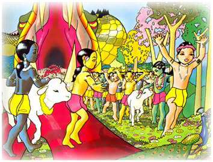

El alma de Agha finalmente tomó refujio a los pies de Krishna. Todos los seres celestiales lanzaban petalos de flores seguidos por sonidos de tambores y canciones.

El gigantesco cuerpo de la serpiente al poco tiempo se seco y se transformo en una roca la que despues los Gopas usaron como lugar de juegos.